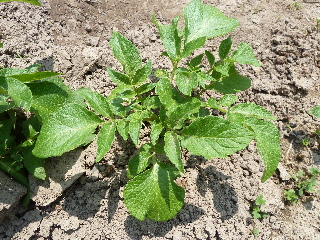
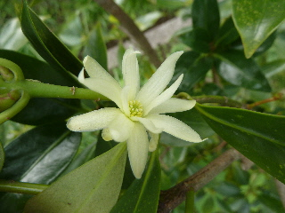
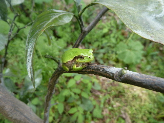
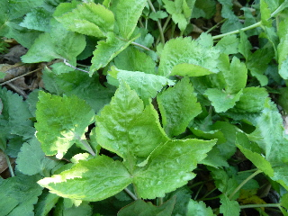
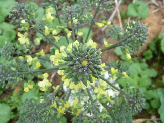
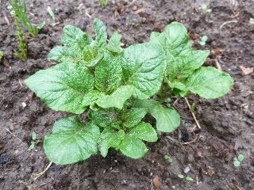
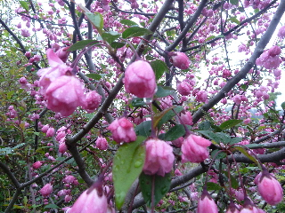

遊びで植物を育てよう
2015/04/25
じゃがいもの芽かき
ちょっと大きくなったので芽かきしました。

そして土寄せもしています。
全部が同じスピードで大きくなっていないので、大きくなったものから順に作業しています。
まだ芽が出てない場所があったら、掘り起こして芋から芽が出てるが確認しました。
【4月TOP】
【日記TOP】
【園芸TOP】
2015/04/18
お茶の木の花です。
いま頃お茶の木の花って咲くんですね。
花を見るために植えていないので、全然意識していませんでした。

花の数が少ないので目立たないですが、綺麗なものです。
【4月TOP】
【日記TOP】
【園芸TOP】
2015/04/18
あちこちでカエルを見るようになりました。
足元をみると、カエルが結構いますね。

カエルが食べるものは沢山あるかな？
【4月TOP】
【日記TOP】
【園芸TOP】
2015/04/11
三つ葉が食べ頃になりました。
三つ葉が成長しました。

葉っぱがやわらかい今が食べ頃です。
これからしょっちゅう収穫したいです。
【4月TOP】
【日記TOP】
【園芸TOP】
2015/04/05
葉牡丹の花です。
葉ボタンが成長して花が咲きました。

菜の花みたいで春らしい感じがしますね。
【4月TOP】
【日記TOP】
【園芸TOP】
2015/04/05
じゃがいもの芽が出ました。
思ったよりも早く出ました。

まだほとんどが芽が出てないんですけど、早いものはもうここまで大きくなってます。
売り物の種いもじゃないので、ばらつきが大きいです。
【4月TOP】
【日記TOP】
【園芸TOP】
2015/04/05
ハナカイドウが咲いています。
検索して花の名前を調べました。

ハナカイドウだと思います。
春の花でピンクのものが多いので、なかなか探し出せませんでした。
【4月TOP】
【日記TOP】
【園芸TOP】
過去の日記
【2024年4月の日記】
【2023年4月の日記】
【2022年4月の日記】
【2021年4月の日記】
【2020年4月の日記】
【2019年4月の日記】
【2018年4月の日記】
【2017年4月の日記】
【2016年4月の日記】
【2015年4月の日記】
【2014年4月の日記】
【2013年4月の日記】
【4月TOP】
【日記TOP】
【園芸TOP】
畑仕事じゃないよ。
【おいしいものを食べよう。】【たくさん寝よう。】
【ソロ活をしよう!】【季節感のあることをしよう。】【動画視聴はほどほどに。】【当サイトの全てのコンテンツは無断転載禁止です。】